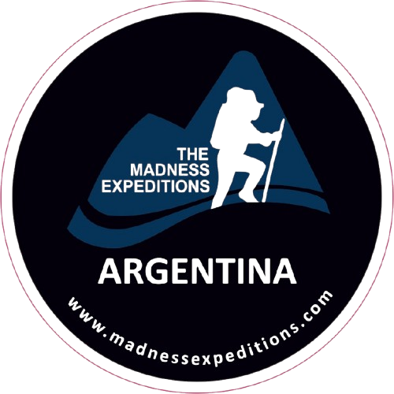

ABRIL 2027
Trekking al Campo Base
del Everest
Un Viaje Al Corazón de los Himalaya & La Cultura Sherpa



Te acompañamos en cada expedición para crear una aventura única e inolvidable en cada destino que quieras conquistar. Nos ocupamos de toda la logística previa y durante el viaje, para que vos solo pienses en disfrutar cada paso del camino.